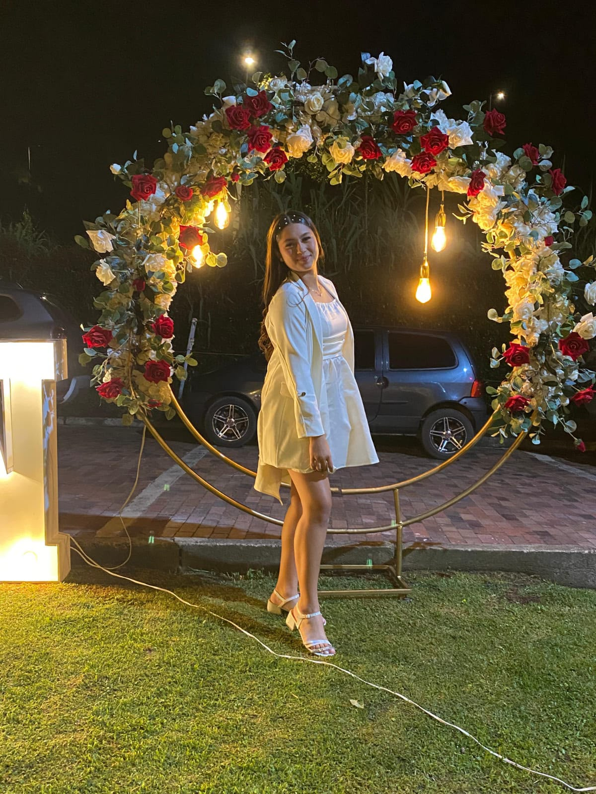
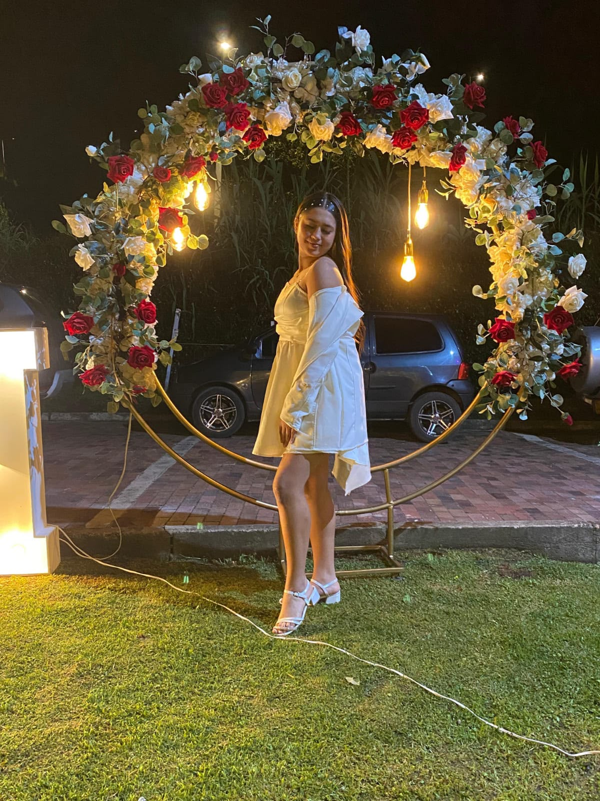
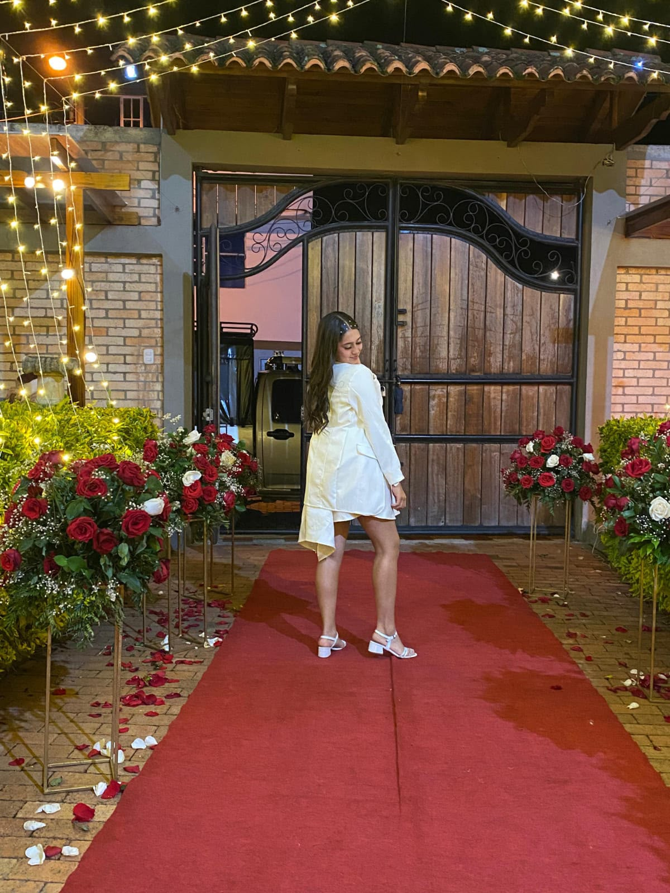
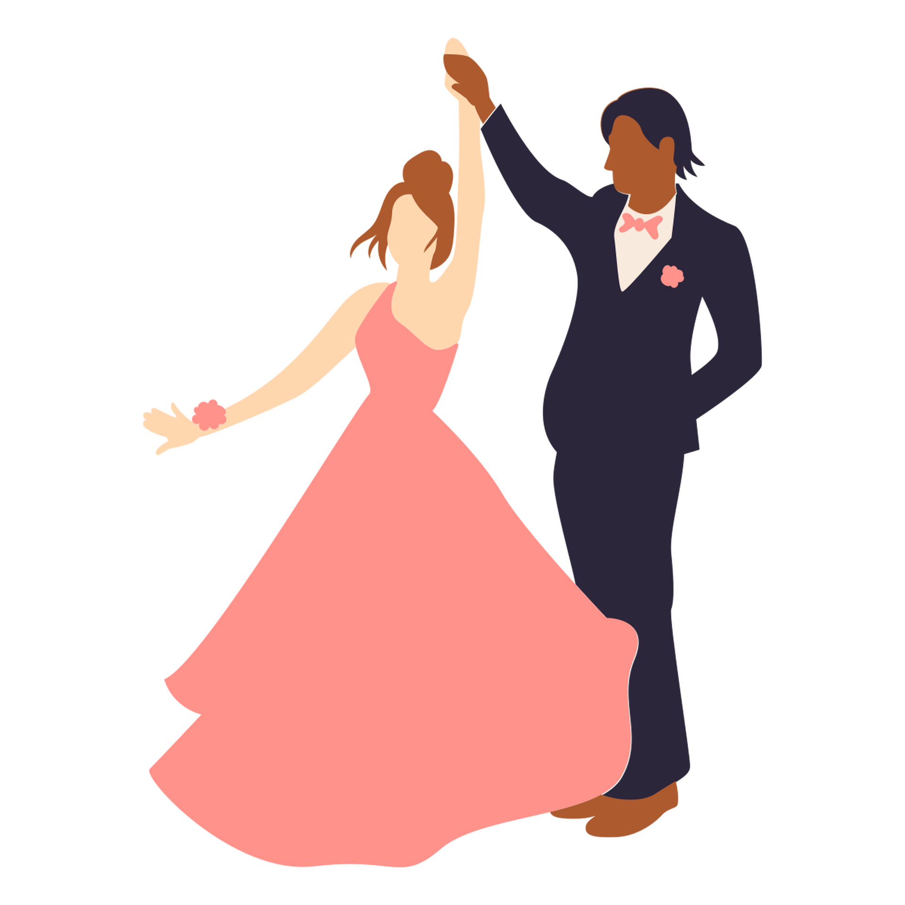

Anyoull Yaritza
MIS XV AÑOS
OCTUBRE
03
SÁBADO - 2026
Ya casi
ES MI DÍA
00
:
00
:
00
:
00
DIAS
HRS
MIN
SEG
Prepárate, sólo faltan...


Detalles
DEL EVENTO
Itinerario
DE ACTIVIDADES
06:00 p.m
Misa de quince años
07:00 p.m
Llegada de invitados
08:00 p.m
Inicio del protocolo
09:00 p.m
Brindis y cena
10:00 p.m
Rumba
Código
DE VESTIMENTA

ELEGANTE • FORMAL
Chicos: Traje / Color negro
Chicas: Vestido de gala (Divinas)
Nos reservamos los colores dorado y azul noche
Lluvia
DE SOBRES
PASE DE HONOR
Apreciado Invitado
Nos complace extenderte esta invitación especial.
Confirmación
Por favor, confirma tu asistencia antes del 20 de Septiembre de 2026 para reservar tu lugar en esta velada inolvidable.
CONFIRMAR ASISTENCIA